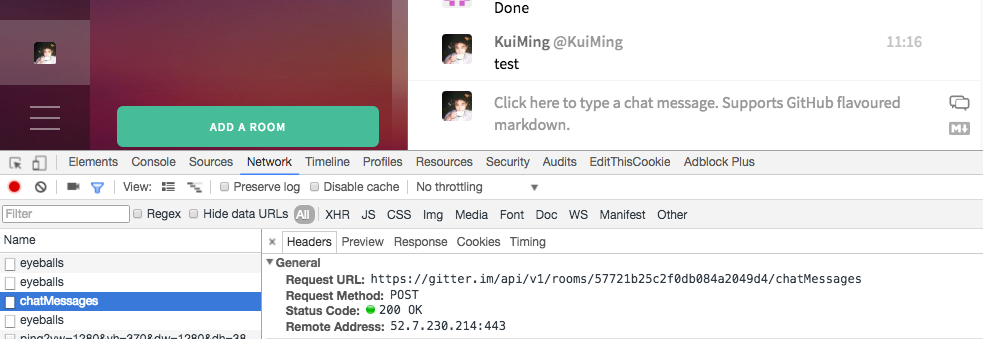

有時候程式就是會跑比較久，不可能總是盯著terminal等待，但又很想跑完的一瞬間就趕快看一下結果，或者一旦出錯，立刻收到通知。這邊提供三個方法：
Gitter
只要有github帳號就可以申請gitter帳號，在gitter內開一個聊天室之後，可以利用R將想說的話POST到聊天室。手機可以安裝gitter app，當有訊息傳到聊天室，手機便能同步提醒。Code可以參考Wush的Blog。不過，這邊有幾件事情要提醒各位：
Room ID: 透過對網頁的觀察才會找到room ID。 
Token: 以Giiter帳號登入Gitter Developer，就可以直接看到Token了。
用自己的gitter帳號POST訊息到給自己的聊天室，手機不會發出通知，因為畢竟是“自己”發的。所以，若希望手機會發出通知，最簡單的方法是去申請另一個帳號，以此帳號發出POST，這樣手機就會收到通知了。

Gmail
R的套件gmailr可透過gmail API連結自己的gmail帳號寄信，以下的步驟做完應該就沒問題了：
-
一開始先執行這一段code吧～～
library(gmailr) msg = mime() %>% from("your@gmail.com") %>% to("towhom0901@gmail.com") %>% subject("Test") %>% html_body("Gmailr is a very handy package!") send_message(msg) 接著會出現以下的畫面，請選擇2，如果這個步驟已經執行過了，應該是不會出現這個畫面：

然後，會在預設的瀏覽器開啟網頁，要求使用者登入，並允許各項權限。
- 完成上述步驟，信件就寄出了。
- 萬一要換帳號，可以
clear_token清理掉之前的權限，然後重開R，執行步驟1~2，選擇你要使用的帳號。
OSX say
有時候，只是希望主機發出一些聲音，讓我知道發生了什麼事情，say其實就足夠幫忙了，用法也非常簡單：
say "{{something you want to say}}"這還能選擇你喜歡的聲音：
say -v Samantha "{{Hello}}"say -v ?可列出可以使用的聲音跑完R code想要出點聲音，可以這麼做
system('say -v Samantha "{{It was Done}}"')-
或者直接把錯誤訊息念出來：
paste0('say "{{', geterrmessage(), '}}"') %>% system()